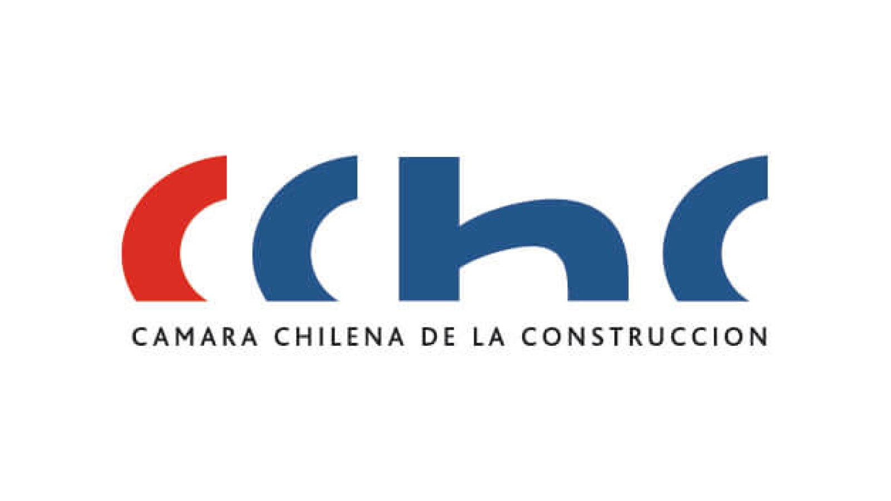

Cámara Chilena de la Construcción
An AI helper that makes building permits in Chile far less painful. It reads architectural drawings and paperwork, then walks applicants and city reviewers through the regulations together.
Un asistente con IA que hace mucho menos doloroso obtener permisos de edificación en Chile. Lee planos y documentos, y guía a solicitantes y revisores municipales por la normativa, juntos.
We cared about reviewers trusting the AI enough to stop printing PDFs.
Nos importó que los revisores confiaran lo suficiente para dejar de imprimir PDFs.
2025 presentactualidad